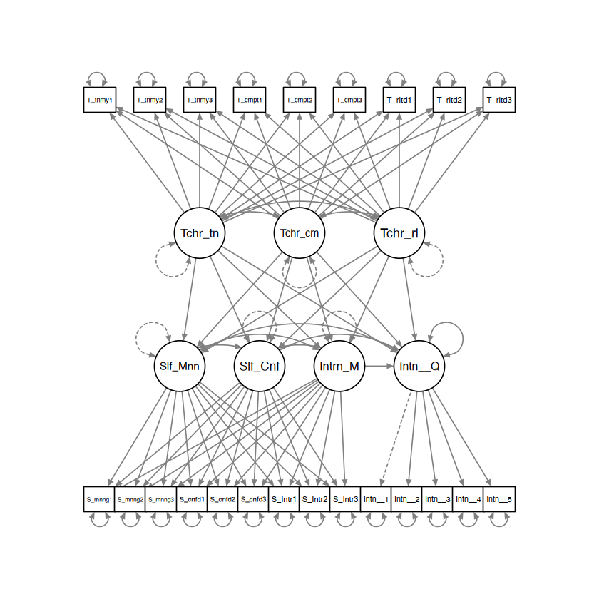
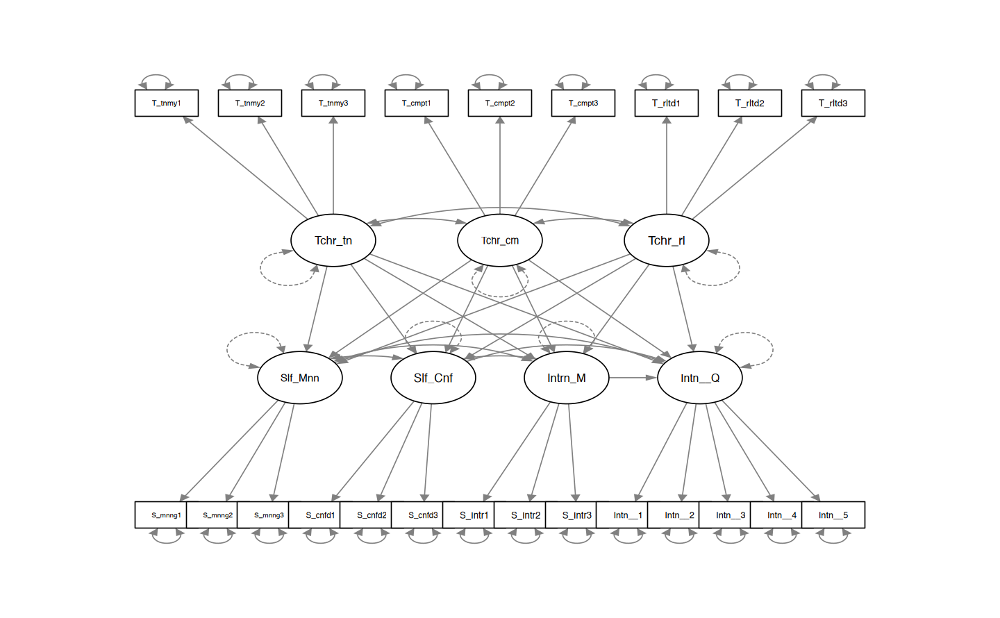
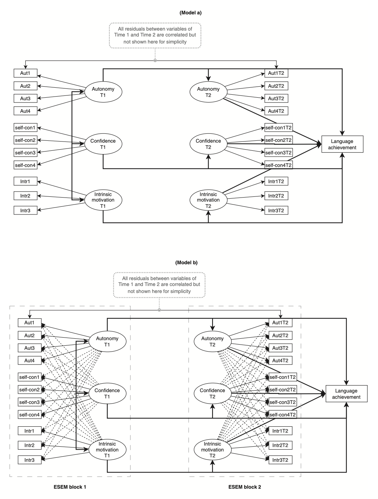

here::here("code", "_common.R") |>
source()
# Load packages
if (!requireNamespace("pacman")) install.packages("pacman")
pacman::p_load(semTools, tidyr, psych, lavaan, kableExtra, stringr)56 Exploratory structural equation modelling
L’Exploratory Structural Equation Modeling (ESEM) è una tecnica statistica che combina i vantaggi dell’analisi fattoriale esplorativa (EFA) e dell’analisi fattoriale confermativa (CFA). Sviluppato da Asparouhov e Muthén nel 2009 e successivamente approfondito da Marsh et al. (2009, 2014), ESEM consente di esaminare strutture fattoriali complesse, permettendo al contempo il test e la valutazione del modello. Questa tecnica è particolarmente utile quando gli item possiedono multiple fonti di varianza, come osservato da Morin et al. (2013), poiché offre un migliore adattamento del modello, riduce le correlazioni inflazionate tra i fattori e consente una rappresentazione significativa delle saturazioni fattoriali incrociate.
Prerequisiti
- Leggere l’articolo:
- Marsh, H., & Alamer, A. (2024). When and how to use set‐exploratory structural equation modelling to test structural models: A tutorial using the R package lavaan. British Journal of Mathematical and Statistical Psychology, 77, 459–476.
Concetti e Competenze Chiave
- Comprensione delle differenze tra l’ESEM completo e il set-ESEM, con quest’ultimo come compromesso tra CFA e ESEM per gestire specifici blocchi indipendenti di variabili.
- Giustificazione dell’uso del set-ESEM nei modelli strutturali come alternativa al CFA.
- Identificazione degli effetti distorti e dei coefficienti di percorso attenuati nei modelli CFA a causa della multicollinearità, e come il set-ESEM riduce questo problema.
- Uso dell’invarianza di misura nei modelli longitudinali per garantire la stabilità delle misurazioni nel tempo, applicabile in set-ESEM.
- Benefici del set-ESEM, inclusi miglior fit del modello, validità discriminante più accurata e riduzione degli errori di tipo II nei modelli strutturali.
- Implementazione pratica in R con lavaan.
Preparazione del Notebook
56.1 Introduzione
Numerosi ricercatori hanno riportato che l’ESEM supera il CFA in diversi campi della psicologia, tra cui la psicologia clinica, della salute, industriale (Marsh et al., 2014), e quella educativa (Alamer, Al Khateeb, & Jeno, 2023; Alamer & Marsh, 2022; Alamer, Morin, et al., 2023; Guay et al., 2015; Kruk et al., 2023). Tuttavia, in alcuni contesti empirici, è necessario introdurre restrizioni al modello ESEM completamente libero. Questo ha portato allo sviluppo del set-ESEM (Marsh et al., 2020), che rappresenta un equilibrio tra ESEM e CFA in un unico quadro analitico. In questo capitolo introdurremo la tecnica della Exploratory structural equation modelling (ESEM) seguendo il tutorial proposto da Marsh & Alamer (2024).
56.2 EFA , CFA , ESEM e SET-ESEM
L’analisi fattoriale esplorativa (EFA) e l’analisi fattoriale confermativa (CFA) rappresentano i due principali approcci per studiare le strutture latenti. L’EFA risale ai lavori di Spearman (1904) e Thurstone (1935, 1947), che inizialmente la chiamavano semplicemente “analisi fattoriale.” Solo con l’arrivo della CFA si iniziò a distinguere tra EFA (esplorativa) e CFA (confermativa). La CFA, infatti, è divenuta popolare perché consente di valutare l’adattamento del modello, trattare i dati mancanti con metodi avanzati e confrontare modelli teorici alternativi. Tuttavia, uno dei limiti principali della CFA è la rigida ipotesi che ogni item carichi solo su un singolo fattore, escludendo possibili carichi incrociati.
Questo limite della CFA ha portato allo sviluppo dell’ESEM (Exploratory Structural Equation Modeling) da parte di Asparouhov e Muthén (2009), che combina i vantaggi della SEM con la flessibilità dell’EFA. L’ESEM consente di integrare SEM con carichi incrociati tra i fattori, adattandosi così meglio ai dati psicometrici complessi. Questo approccio si è rivelato superiore alla CFA in numerosi studi per la capacità di migliorare l’adattamento del modello e sostenere la validità discriminante tra i fattori. Recentemente, Gegenfurtner (2022) ha confermato con una meta-analisi su 158 studi che l’ESEM supera la CFA per la bontà di adattamento e la validità discriminante.
Tuttavia, in alcune situazioni, l’ESEM può risultare meno parsimonioso della CFA, e per questo è stato sviluppato il set-ESEM (Marsh et al., 2020). Il set-ESEM consente di bilanciare la flessibilità dell’ESEM con la struttura più rigorosa della CFA, utilizzando tecniche di rotazione come la rotazione geomin o il target rotation per limitare i carichi incrociati non essenziali.
L’ESEM è molto diffuso nella psicometria corrente, dove ha mostrato risultati superiori rispetto alla CFA per comprendere le strutture fattoriali complesse. L’ESEM consente una rappresentazione accurata delle correlazioni e delle regressioni tra fattori, utilizzando tutti i dati disponibili a livello degli indicatori.

56.3 Situazioni dove Set-ESEM è Preferibile a ESEM
Esistono comunque situazioni in cui l’ESEM completo potrebbe non essere la scelta migliore per un’analisi. Questo accade quando un insieme di fattori e item dovrebbe allinearsi e distinguersi da altri insiemi non pertinenti. In questi casi, è possibile creare mini-set di ESEM all’interno di un modello più ampio, un approccio noto come set-ESEM (Marsh et al., 2020). Il set-ESEM rappresenta uno sviluppo recente nell’analisi fattoriale, ideato per raggiungere un compromesso ottimale tra CFA ed ESEM completo in termini di indici di adattamento del modello, parsimonia, struttura confermativa e un modello di misurazione ben definito. In alcune situazioni, il set-ESEM può risultare più adeguato dell’ESEM completo. Qui descriviamo due esempi con dati reali e analisi empiriche.
Il primo riguarda il caso in cui un ricercatore raccoglie dati su item relativi a costrutti concettualmente distinti o appartenenti a teorie diverse. Ad esempio, consideriamo un dataset contenente item che misurano autonomia, competenza e relazionalità delle tre necessità psicologiche di base (Ryan & Deci, 2017) tramite la scala BPN-L2 (Alamer, 2022), e due costrutti, perseveranza nello sforzo e coerenza dell’interesse, derivati dalla teoria del grit (Duckworth et al., 2007) e misurati con la scala L2-grit (Alamer, 2021b). In questo caso, risulterebbe inappropriato stimare carichi incrociati tra item del grit e quelli delle tre necessità psicologiche, poiché ogni teoria attribuisce funzioni differenti ai propri costrutti e item: ad esempio, i fattori delle necessità psicologiche di base sono teorizzati come influenzati dal contesto sociale, mentre il grit è considerato un tratto stabile della personalità. In queste circostanze, il ricercatore potrebbe preferire due blocchi (o set) ESEM: uno per i tre fattori delle necessità psicologiche, con carichi incrociati tra loro ma non con gli item del grit, e un secondo set per i due fattori del grit senza carichi incrociati con le necessità psicologiche. Questo approccio consente un modello più parsimonioso, bilanciando esame teorico e test empirico.
La seconda situazione in cui l’uso del set-ESEM è consigliato riguarda il caso in cui i dati provengano da costrutti rilevanti raccolti in più momenti temporali. Qui, i carichi incrociati dovrebbero essere stimati solo tra i costrutti nidificati nello stesso momento temporale. Per esempio, consideriamo un dataset che contiene la passione armoniosa, la passione ossessiva e l’autonomia misurate in due tempi distinti. Questi costrutti sono concettualmente correlati, per cui i carichi incrociati sono ragionevoli all’interno dello stesso tempo. Tuttavia, permettere che i carichi incrociati tra item del primo tempo influenzino quelli del secondo sarebbe teoricamente inappropriato e tecnicamente poco desiderabile, rischiando di creare effetti di confondimento. Inoltre, è consuetudine nelle analisi longitudinali SEM correlare i residui degli stessi item nel tempo (Marsh & Hau, 1996). L’applicazione del set-ESEM in tali casi consente di mantenere la flessibilità dell’ESEM con la rigore e parsimonia della CFA.
Nelle sezioni successive, riportiamo due studi per illustrare questi scenari, dimostrando come il set-ESEM possa rappresentare un’alternativa preferibile al sistema restrittivo della CFA. Per quanto riguarda gli indici di affidabilità, si raccomanda che i ricercatori riportino il coefficiente omega (ω) per la composita affidabilità del modello. Essendo questa una dimostrazione metodologica, ci focalizziamo più sulle analisi che sulla discussione teorica.
Nei due esempi discussi da Marsh & Alamer (2024), i partecipanti erano studenti sauditi che imparano l’inglese come L2 in un’università pubblica saudita e hanno partecipato tramite un questionario online. Nel primo studio hanno partecipato 269 studenti, mentre nel secondo 389. Tutti gli studenti, di età compresa tra i 18 e i 20 anni (M = 18.5), parlavano l’arabo come lingua madre.
56.4 Studio 1
Lo Studio 1 affronta il primo scenario in cui un ricercatore potrebbe avere costrutti derivati da teorie o livelli concettuali differenti. Nel nostro caso, abbiamo due blocchi teorici.
- Il primo include tre costrutti derivati dalla teoria delle necessità psicologiche di base (BPN): autonomia, competenza e relazionalità (vedi Noels, 2023; Ryan & Deci, 2017). In particolare, la misura è costituita dalla percezione degli studenti sull’insegnante di inglese come promotore di questi tre fattori BPN.
- Il secondo blocco rappresenta diversi risultati associati alla teoria BPN, come senso di significato, senso di sicurezza e motivazione intrinseca. La ricerca suggerisce che, quando gli studenti percepiscono il proprio insegnante come un promotore delle BPN, si osserva una maggiore motivazione intrinseca, senso di significato e sicurezza (Alamer, 2022; Alamer & Al Khateeb, 2023; Alamer, Al Khateeb, & Jeno, 2023; Guay et al., 2015; Noels, 2023).
In questo studio, ai partecipanti è stato chiesto di indicare la propria percezione dell’insegnante come promotore delle tre BPN, mentre per il senso di significato, sicurezza e motivazione intrinseca i partecipanti hanno risposto sulla propria percezione di sé. Questa distinzione giustifica l’assenza di carichi incrociati tra variabili che misurano aspetti di “self-sense” (ovvero, senso di significato, sicurezza e motivazione intrinseca), poiché ogni blocco ha un significato concettuale distinto. È difficile giustificare concettualmente carichi incrociati tra costrutti che riguardano l’insegnante e quelli legati alla percezione di sé. Infine, l’intenzione di abbandonare il corso viene usata come variabile di esito nel modello. I due modelli alternativi sono presentati nella Figura seguente.

Strumenti di Misura
È stata utilizzata la scala BPN-L2 (Alamer, 2022), con tre item per ciascun costrutto. Esempi di item includono: “Il mio insegnante ci permette di scegliere i compiti di apprendimento linguistico” (autonomia; ω = .75), “Il mio insegnante ci dice che siamo capaci di imparare l’inglese” (competenza; ω = .75) e “Il mio insegnante di inglese è amichevole e cordiale con noi” (relazionalità; ω = .91).
Per la motivazione intrinseca, sono stati adottati tre item dalla scala SDT-L2 (Alamer, 2022), ad esempio: “Imparo l’inglese perché mi piace” (ω = .91). Tre item per il senso di sicurezza e tre per il significato sono stati presi da Dörnyei e Ushioda (2021) e da Dörnyei e Ryan (2015). Un esempio di item per il senso di sicurezza è “Credo nelle mie capacità di fare bene nel corso” (ω = .74) e per il significato “So perché mi sono iscritto a questo corso” (ω = .91).
Per misurare l’intenzione di abbandonare il corso sono stati adottati cinque item di Lounsbury et al. (2004), come: “Non ho intenzione di continuare a studiare in questo settore” (ω = .90). Le misure sono basate su una scala Likert a cinque punti, da 1 (fortemente in disaccordo) a 5 (fortemente d’accordo).
Codice lavaan per il modello ESEM
Importiamo i dati e esaminiamo le variabili.
study1_dat <- rio::import(
here::here(
"data", "marsh_alamer", "Study_1_data.csv"
)
)
glimpse(study1_dat)Rows: 269
Columns: 23
$ Intent_to_withdraw1 <int> 2, 2, 4, 4, 5, 1, 4, 2, 1, 5, 2, 4, 5, 5, 3, 5~
$ Intent_to_withdraw2 <int> 2, 3, 4, 5, 5, 1, 3, 4, 1, 5, 2, 5, 5, 5, 4, 5~
$ Intent_to_withdraw3 <int> 1, 2, 1, 4, 5, 1, 3, 1, 1, 5, 2, 3, 4, 4, 3, 4~
$ Intent_to_withdraw4 <int> 2, 2, 3, 5, 5, 1, 3, 2, 2, 4, 2, 4, 4, 4, 5, 4~
$ Intent_to_withdraw5 <int> 3, 3, 4, 4, 4, 1, 4, 2, 1, 5, 2, 4, 4, 4, 4, 4~
$ T_relatedness1 <int> 4, 4, 2, 2, 2, 5, 1, 4, 4, 4, 4, 4, 1, 1, 1, 1~
$ T_relatedness2 <int> 3, 4, 2, 2, 1, 5, 1, 4, 4, 2, 4, 3, 1, 1, 1, 1~
$ T_relatedness3 <int> 3, 5, 2, 2, 2, 5, 1, 4, 4, 4, 4, 4, 1, 1, 3, 1~
$ T_competence1 <int> 4, 5, 2, 4, 3, 5, 5, 4, 2, 4, 3, 4, 2, 2, 3, 2~
$ T_competence2 <int> 4, 4, 2, 3, 3, 5, 5, 5, 2, 4, 4, 4, 2, 2, 4, 2~
$ T_competence3 <int> 4, 5, 1, 4, 3, 5, 4, 4, 2, 4, 3, 3, 2, 2, 4, 2~
$ T_autonomy1 <int> 4, 5, 2, 2, 4, 5, 3, 4, 4, 4, 4, 4, 2, 2, 2, 2~
$ T_autonomy2 <int> 3, 5, 2, 3, 3, 5, 1, 4, 4, 4, 4, 3, 3, 3, 2, 3~
$ T_autonomy3 <int> 3, 5, 2, 2, 3, 5, 1, 4, 4, 3, 3, 3, 1, 1, 4, 1~
$ S_meaning1 <int> 4, 5, 4, 1, 2, 5, 3, 4, 4, 3, 5, 2, 5, 5, 2, 5~
$ S_meaning2 <int> 3, 5, 4, 2, 2, 5, 1, 4, 4, 4, 5, 2, 5, 5, 1, 5~
$ S_meaning3 <int> 5, 4, 4, 2, 2, 5, 1, 4, 4, 4, 5, 2, 5, 5, 2, 5~
$ S_confidence1 <int> 4, 5, 5, 4, 4, 5, 5, 4, 2, 5, 5, 3, 5, 5, 4, 5~
$ S_confidence2 <int> 4, 5, 5, 4, 4, 5, 5, 4, 2, 5, 5, 4, 5, 5, 4, 5~
$ S_confidence3 <int> 4, 5, 5, 5, 5, 5, 5, 4, 1, 5, 5, 3, 5, 5, 4, 5~
$ S_Intrinsic1 <int> 4, 4, 2, 2, 2, 5, 3, 4, 2, 5, 3, 3, 2, 2, 1, 2~
$ S_Intrinsic2 <int> 4, 5, 2, 3, 3, 5, 4, 4, 2, 5, 5, 4, 1, 1, 2, 1~
$ S_Intrinsic3 <int> 4, 5, 1, 2, 3, 5, 4, 4, 2, 5, 4, 4, 1, 1, 2, 1~Definiamo il modello ESEM.
esem1 <- '
# the long format (more flexible) each factor is defined separately
efa("teacher")*Teacher_autonomy =~ T_autonomy1 + T_autonomy2 + T_autonomy3 + T_competence1 + T_competence2 + T_competence3 + T_relatedness1 + T_relatedness2 + T_relatedness3
efa("teacher")*Teacher_competence =~ T_autonomy1 + T_autonomy2 + T_autonomy3 + T_competence1 + T_competence2 + T_competence3 + T_relatedness1 + T_relatedness2 + T_relatedness3
efa("teacher")*Teacher_relatedness =~ T_autonomy1 + T_autonomy2 + T_autonomy3 + T_competence1 + T_competence2 + T_competence3 + T_relatedness1 + T_relatedness2 + T_relatedness3
# the short format (less flexible) all factors defined in one instance (remove ”##” if you want to use this)
# efa("teacher")*Teacher_autonomy +
# efa("teacher")*Teacher_competence +
# efa("teacher")*Teacher_relatedness =~ T_autonomy1 + T_autonomy2 + T_autonomy3 + T_competence1 + T_competence2 + T_competence3 + T_relatedness1 + T_relatedness2 + T_relatedness3
# defining the second ESEM block
efa("self")*Self_Meaning =~ S_meaning1 + S_meaning2 + S_meaning3 + S_confidence1 + S_confidence2 + S_confidence3 + S_Intrinsic1 + S_Intrinsic2+S_Intrinsic3
efa("self")*Self_Confidence =~ S_meaning1 + S_meaning2 + S_meaning3 + S_confidence1 + S_confidence2 + S_confidence3 + S_Intrinsic1 + S_Intrinsic2+S_Intrinsic3
efa("self")*Intrinsic_Motivation =~ S_meaning1 + S_meaning2 + S_meaning3 + S_confidence1 + S_confidence2 + S_confidence3 + S_Intrinsic1 + S_Intrinsic2+S_Intrinsic3
# defining the outcome variable
Intent_to_Quit =~ Intent_to_withdraw1 + Intent_to_withdraw2 + Intent_to_withdraw3 + Intent_to_withdraw4 + Intent_to_withdraw5
# defining the structural part
Self_Meaning ~ Teacher_autonomy + Teacher_competence + Teacher_relatedness
Self_Confidence ~ Teacher_autonomy + Teacher_competence + Teacher_relatedness
Intrinsic_Motivation ~ Teacher_autonomy + Teacher_competence + Teacher_relatedness
Intent_to_Quit ~ Self_Meaning + Self_Confidence + Intrinsic_Motivation +
Teacher_autonomy + Teacher_competence + Teacher_relatedness
'out1 <- sem(
model = esem1,
data = study1_dat,
estimator = "MLR", # verbose = TRUE, test = "yuan.bentler",
rotation = "geomin",
rotation.args = list(geomin.epsilon = 0.005)
)semPlot::semPaths(
out1,
what = "col", whatLabels = "no", style = "mx",
layout = "tree", nCharNodes = 7,
shapeMan = "rectangle", sizeMan = 5, sizeMan2 = 4
)
summary(out1, standardized = TRUE, fit.measures = TRUE) |> print()lavaan 0.6-19 ended normally after 67 iterations
Estimator ML
Optimization method NLMINB
Number of model parameters 103
Row rank of the constraints matrix 12
Rotation method GEOMIN OBLIQUE
Geomin epsilon 0.005
Rotation algorithm (rstarts) GPA (30)
Standardized metric TRUE
Row weights None
Number of observations 269
Model Test User Model:
Standard Scaled
Test Statistic 396.932 367.121
Degrees of freedom 185 185
P-value (Chi-square) 0.000 0.000
Scaling correction factor 1.081
Yuan-Bentler correction (Mplus variant)
Model Test Baseline Model:
Test statistic 4271.294 3518.139
Degrees of freedom 253 253
P-value 0.000 0.000
Scaling correction factor 1.214
User Model versus Baseline Model:
Comparative Fit Index (CFI) 0.947 0.944
Tucker-Lewis Index (TLI) 0.928 0.924
Robust Comparative Fit Index (CFI) 0.950
Robust Tucker-Lewis Index (TLI) 0.932
Loglikelihood and Information Criteria:
Loglikelihood user model (H0) -7894.627 -7894.627
Scaling correction factor 1.378
for the MLR correction
Loglikelihood unrestricted model (H1) -7696.161 -7696.161
Scaling correction factor 1.179
for the MLR correction
Akaike (AIC) 15971.254 15971.254
Bayesian (BIC) 16298.373 16298.373
Sample-size adjusted Bayesian (SABIC) 16009.844 16009.844
Root Mean Square Error of Approximation:
RMSEA 0.065 0.060
90 Percent confidence interval - lower 0.056 0.052
90 Percent confidence interval - upper 0.074 0.069
P-value H_0: RMSEA <= 0.050 0.003 0.025
P-value H_0: RMSEA >= 0.080 0.003 0.000
Robust RMSEA 0.063
90 Percent confidence interval - lower 0.053
90 Percent confidence interval - upper 0.072
P-value H_0: Robust RMSEA <= 0.050 0.013
P-value H_0: Robust RMSEA >= 0.080 0.001
Standardized Root Mean Square Residual:
SRMR 0.045 0.045
Parameter Estimates:
Standard errors Sandwich
Information bread Observed
Observed information based on Hessian
Latent Variables:
Estimate Std.Err z-value P(>|z|)
Teacher_autonomy =~ teacher
T_autonomy1 0.787 0.128 6.159 0.000
T_autonomy2 1.156 0.077 14.918 0.000
T_autonomy3 0.971 0.104 9.323 0.000
T_competence1 -0.058 0.072 -0.806 0.420
T_competence2 0.288 0.164 1.753 0.080
T_competence3 0.123 0.219 0.564 0.573
T_relatedness1 0.423 0.149 2.845 0.004
T_relatedness2 -0.011 0.029 -0.391 0.696
T_relatedness3 0.332 0.246 1.348 0.178
Teacher_competence =~ teacher
T_autonomy1 0.261 0.119 2.184 0.029
T_autonomy2 -0.035 0.039 -0.901 0.368
T_autonomy3 0.087 0.085 1.022 0.307
T_competence1 1.220 0.073 16.735 0.000
T_competence2 0.943 0.147 6.433 0.000
T_competence3 0.622 0.169 3.678 0.000
T_relatedness1 -0.024 0.020 -1.247 0.212
T_relatedness2 0.049 0.053 0.919 0.358
T_relatedness3 0.061 0.151 0.404 0.686
Teacher_relatedness =~ teacher
T_autonomy1 0.042 0.061 0.684 0.494
T_autonomy2 -0.048 0.066 -0.729 0.466
T_autonomy3 0.078 0.104 0.752 0.452
T_competence1 0.029 0.054 0.536 0.592
T_competence2 -0.041 0.040 -1.043 0.297
T_competence3 0.179 0.111 1.608 0.108
T_relatedness1 0.832 0.156 5.346 0.000
T_relatedness2 1.129 0.086 13.160 0.000
T_relatedness3 0.316 0.198 1.593 0.111
Self_Meaning =~ self
S_meaning1 0.808 0.065 12.388 0.000
S_meaning2 1.065 0.060 17.818 0.000
S_meaning3 1.040 0.056 18.600 0.000
S_confidence1 -0.028 0.040 -0.697 0.486
S_confidence2 0.098 0.038 2.599 0.009
S_confidence3 -0.016 0.017 -0.900 0.368
S_Intrinsic1 -0.008 0.053 -0.157 0.875
S_Intrinsic2 -0.002 0.044 -0.057 0.955
S_Intrinsic3 0.009 0.037 0.231 0.818
Self_Confidence =~ self
S_meaning1 0.052 0.060 0.875 0.382
S_meaning2 -0.027 0.027 -0.996 0.319
S_meaning3 -0.002 0.026 -0.069 0.945
S_confidence1 0.609 0.074 8.255 0.000
S_confidence2 0.560 0.059 9.441 0.000
S_confidence3 0.553 0.065 8.445 0.000
S_Intrinsic1 -0.027 0.073 -0.374 0.708
S_Intrinsic2 0.107 0.062 1.737 0.082
S_Intrinsic3 -0.011 0.031 -0.354 0.723
Intrinsic_Motivation =~ self
S_meaning1 0.043 0.030 1.461 0.144
S_meaning2 -0.011 0.016 -0.665 0.506
S_meaning3 -0.014 0.016 -0.915 0.360
S_confidence1 -0.026 0.029 -0.905 0.366
S_confidence2 -0.004 0.010 -0.396 0.692
S_confidence3 0.028 0.024 1.194 0.232
S_Intrinsic1 0.449 0.047 9.469 0.000
S_Intrinsic2 0.498 0.076 6.581 0.000
S_Intrinsic3 0.634 0.078 8.120 0.000
Intent_to_Quit =~
Intnt_t_wthdr1 1.000
Intnt_t_wthdr2 0.946 0.033 28.953 0.000
Intnt_t_wthdr3 1.017 0.031 32.987 0.000
Intnt_t_wthdr4 0.683 0.074 9.170 0.000
Intnt_t_wthdr5 0.665 0.053 12.648 0.000
Std.lv Std.all
0.787 0.612
1.156 0.922
0.971 0.774
-0.058 -0.046
0.288 0.227
0.123 0.102
0.423 0.324
-0.011 -0.009
0.332 0.250
0.261 0.203
-0.035 -0.028
0.087 0.069
1.220 0.972
0.943 0.744
0.622 0.516
-0.024 -0.019
0.049 0.039
0.061 0.046
0.042 0.033
-0.048 -0.038
0.078 0.062
0.029 0.023
-0.041 -0.033
0.179 0.149
0.832 0.636
1.129 0.900
0.316 0.238
0.890 0.738
1.173 0.919
1.146 0.927
-0.031 -0.031
0.107 0.140
-0.017 -0.023
-0.009 -0.008
-0.003 -0.002
0.009 0.007
0.055 0.045
-0.028 -0.022
-0.002 -0.002
0.637 0.639
0.586 0.763
0.578 0.766
-0.028 -0.024
0.112 0.093
-0.012 -0.009
0.070 0.058
-0.018 -0.014
-0.023 -0.019
-0.043 -0.043
-0.006 -0.008
0.046 0.061
0.725 0.619
0.805 0.669
1.025 0.815
1.170 0.955
1.107 0.911
1.190 0.875
0.799 0.637
0.778 0.648
Regressions:
Estimate Std.Err z-value P(>|z|) Std.lv
Self_Meaning ~
Teacher_autnmy -0.040 0.139 -0.287 0.774 -0.036
Teacher_cmptnc 0.271 0.125 2.172 0.030 0.246
Teachr_rltdnss 0.287 0.120 2.387 0.017 0.260
Self_Confidence ~
Teacher_autnmy -0.096 0.152 -0.630 0.529 -0.092
Teacher_cmptnc 0.299 0.146 2.048 0.041 0.286
Teachr_rltdnss -0.306 0.159 -1.925 0.054 -0.293
Intrinsic_Motivation ~
Teacher_autnmy 0.862 0.333 2.588 0.010 0.533
Teacher_cmptnc 0.217 0.198 1.096 0.273 0.134
Teachr_rltdnss 0.339 0.227 1.494 0.135 0.210
Intent_to_Quit ~
Self_Meaning -0.123 0.078 -1.580 0.114 -0.115
Self_Confidenc 0.056 0.072 0.774 0.439 0.050
Intrinsc_Mtvtn 0.169 0.096 1.764 0.078 0.234
Teacher_autnmy -0.790 0.211 -3.752 0.000 -0.676
Teacher_cmptnc 0.078 0.115 0.676 0.499 0.066
Teachr_rltdnss -0.208 0.156 -1.337 0.181 -0.178
Std.all
-0.036
0.246
0.260
-0.092
0.286
-0.293
0.533
0.134
0.210
-0.115
0.050
0.234
-0.676
0.066
-0.178
Covariances:
Estimate Std.Err z-value P(>|z|) Std.lv
Teacher_autonomy ~~
Teacher_cmptnc 0.652 0.067 9.730 0.000 0.652
Teachr_rltdnss 0.659 0.064 10.287 0.000 0.659
Teacher_competence ~~
Teachr_rltdnss 0.545 0.084 6.495 0.000 0.545
.Self_Meaning ~~
.Self_Confidenc 0.195 0.083 2.346 0.019 0.195
.Intrinsc_Mtvtn 0.071 0.105 0.678 0.498 0.071
.Self_Confidence ~~
.Intrinsc_Mtvtn 0.281 0.116 2.431 0.015 0.281
Std.all
0.652
0.659
0.545
0.195
0.071
0.281
Variances:
Estimate Std.Err z-value P(>|z|) Std.lv Std.all
.T_autonomy1 0.642 0.085 7.529 0.000 0.642 0.388
.T_autonomy2 0.356 0.093 3.822 0.000 0.356 0.226
.T_autonomy3 0.399 0.062 6.482 0.000 0.399 0.254
.T_competence1 0.138 0.115 1.209 0.227 0.138 0.088
.T_competence2 0.338 0.072 4.723 0.000 0.338 0.210
.T_competence3 0.766 0.106 7.238 0.000 0.766 0.528
.T_relatedness1 0.409 0.080 5.113 0.000 0.409 0.239
.T_relatedness2 0.254 0.161 1.579 0.114 0.254 0.161
.T_relatedness3 1.363 0.119 11.408 0.000 1.363 0.773
.S_meaning1 0.600 0.084 7.099 0.000 0.600 0.412
.S_meaning2 0.274 0.089 3.093 0.002 0.274 0.168
.S_meaning3 0.231 0.052 4.420 0.000 0.231 0.151
.S_confidence1 0.593 0.136 4.354 0.000 0.593 0.598
.S_confidence2 0.218 0.053 4.138 0.000 0.218 0.370
.S_confidence3 0.232 0.046 4.988 0.000 0.232 0.407
.S_Intrinsic1 0.855 0.105 8.179 0.000 0.855 0.622
.S_Intrinsic2 0.772 0.101 7.655 0.000 0.772 0.534
.S_Intrinsic3 0.528 0.098 5.370 0.000 0.528 0.334
.Intnt_t_wthdr1 0.133 0.031 4.277 0.000 0.133 0.088
.Intnt_t_wthdr2 0.253 0.038 6.622 0.000 0.253 0.171
.Intnt_t_wthdr3 0.432 0.057 7.549 0.000 0.432 0.234
.Intnt_t_wthdr4 0.936 0.137 6.820 0.000 0.936 0.595
.Intnt_t_wthdr5 0.836 0.104 8.004 0.000 0.836 0.580
Teacher_autnmy 1.000 1.000 1.000
Teacher_cmptnc 1.000 1.000 1.000
Teachr_rltdnss 1.000 1.000 1.000
.Self_Meaning 1.000 0.824 0.824
.Self_Confidenc 1.000 0.914 0.914
.Intrinsc_Mtvtn 1.000 0.383 0.383
.Intent_to_Quit 0.786 0.093 8.477 0.000 0.574 0.574
cfa1 <- ' ## Specify the measurement model
# "teacher" factors
Teacher_autonomy =~ T_autonomy1 + T_autonomy2 + T_autonomy3
Teacher_competence =~ T_competence1 + T_competence2 + T_competence3
Teacher_relatedness =~ T_relatedness1 + T_relatedness2 + T_relatedness3
# "self" factors
Self_Meaning =~ S_meaning1 + S_meaning2 + S_meaning3
Self_Confidence =~ S_confidence1 + S_confidence2 + S_confidence3
Intrinsic_Motivation =~ S_Intrinsic1 + S_Intrinsic2 + S_Intrinsic3
# defining the outcome variable
Intent_to_Quit =~ Intent_to_withdraw1 + Intent_to_withdraw2 + Intent_to_withdraw3 + Intent_to_withdraw4 + Intent_to_withdraw5
# specify the structural model
Self_Meaning ~ Teacher_autonomy + Teacher_competence + Teacher_relatedness
Self_Confidence ~ Teacher_autonomy + Teacher_competence + Teacher_relatedness
Intrinsic_Motivation ~ Teacher_autonomy + Teacher_competence + Teacher_relatedness
Intent_to_Quit ~ Self_Meaning + Self_Confidence + Intrinsic_Motivation +
Teacher_autonomy + Teacher_competence + Teacher_relatedness
# residual covariances among mediating factors in Block 2 ("self")
# (not automatically estimated due to being predictors as well,
# but ESEM rotation allows their covariances to be nonzero)
Self_Meaning ~~ Self_Confidence + Intrinsic_Motivation
Self_Confidence ~~ Intrinsic_Motivation
'fit1 <- sem(
model = cfa1, data = study1_dat,
estimator = "MLR", std.lv = TRUE
)semPlot::semPaths(
fit1,
what = "col", whatLabels = "no", style = "mx",
layout = "tree", nCharNodes = 7,
shapeMan = "rectangle", sizeMan = 6, sizeMan2 = 4
)
summary(fit1, standardized = TRUE, fit.measures = TRUE) |> print()lavaan 0.6-19 ended normally after 53 iterations
Estimator ML
Optimization method NLMINB
Number of model parameters 67
Number of observations 269
Model Test User Model:
Standard Scaled
Test Statistic 459.107 419.040
Degrees of freedom 209 209
P-value (Chi-square) 0.000 0.000
Scaling correction factor 1.096
Yuan-Bentler correction (Mplus variant)
Model Test Baseline Model:
Test statistic 4271.294 3518.139
Degrees of freedom 253 253
P-value 0.000 0.000
Scaling correction factor 1.214
User Model versus Baseline Model:
Comparative Fit Index (CFI) 0.938 0.936
Tucker-Lewis Index (TLI) 0.925 0.922
Robust Comparative Fit Index (CFI) 0.942
Robust Tucker-Lewis Index (TLI) 0.930
Loglikelihood and Information Criteria:
Loglikelihood user model (H0) -7925.715 -7925.715
Scaling correction factor 1.439
for the MLR correction
Loglikelihood unrestricted model (H1) -7696.161 -7696.161
Scaling correction factor 1.179
for the MLR correction
Akaike (AIC) 15985.429 15985.429
Bayesian (BIC) 16226.275 16226.275
Sample-size adjusted Bayesian (SABIC) 16013.842 16013.842
Root Mean Square Error of Approximation:
RMSEA 0.067 0.061
90 Percent confidence interval - lower 0.058 0.053
90 Percent confidence interval - upper 0.075 0.069
P-value H_0: RMSEA <= 0.050 0.001 0.013
P-value H_0: RMSEA >= 0.080 0.004 0.000
Robust RMSEA 0.064
90 Percent confidence interval - lower 0.055
90 Percent confidence interval - upper 0.073
P-value H_0: Robust RMSEA <= 0.050 0.006
P-value H_0: Robust RMSEA >= 0.080 0.001
Standardized Root Mean Square Residual:
SRMR 0.053 0.053
Parameter Estimates:
Standard errors Sandwich
Information bread Observed
Observed information based on Hessian
Latent Variables:
Estimate Std.Err z-value P(>|z|) Std.lv
Teacher_autonomy =~
T_autonomy1 1.016 0.059 17.270 0.000 1.016
T_autonomy2 1.066 0.050 21.119 0.000 1.066
T_autonomy3 1.093 0.046 23.977 0.000 1.093
Teacher_competence =~
T_competence1 1.129 0.053 21.180 0.000 1.129
T_competence2 1.164 0.050 23.337 0.000 1.164
T_competence3 0.819 0.074 11.027 0.000 0.819
Teacher_relatedness =~
T_relatedness1 1.191 0.048 24.632 0.000 1.191
T_relatedness2 1.053 0.052 20.124 0.000 1.053
T_relatedness3 0.628 0.089 7.015 0.000 0.628
Self_Meaning =~
S_meaning1 0.839 0.061 13.822 0.000 0.920
S_meaning2 1.061 0.060 17.603 0.000 1.163
S_meaning3 1.039 0.058 17.821 0.000 1.139
Self_Confidence =~
S_confidence1 0.582 0.071 8.139 0.000 0.617
S_confidence2 0.578 0.057 10.172 0.000 0.612
S_confidence3 0.538 0.066 8.172 0.000 0.570
Intrinsic_Motivation =~
S_Intrinsic1 0.443 0.050 8.881 0.000 0.719
S_Intrinsic2 0.501 0.074 6.773 0.000 0.812
S_Intrinsic3 0.634 0.069 9.250 0.000 1.028
Intent_to_Quit =~
Intnt_t_wthdr1 0.893 0.050 17.918 0.000 1.171
Intnt_t_wthdr2 0.844 0.048 17.608 0.000 1.107
Intnt_t_wthdr3 0.907 0.053 17.267 0.000 1.189
Intnt_t_wthdr4 0.608 0.069 8.834 0.000 0.798
Intnt_t_wthdr5 0.593 0.055 10.801 0.000 0.778
Std.all
0.790
0.850
0.871
0.900
0.918
0.681
0.911
0.840
0.473
0.763
0.911
0.922
0.619
0.798
0.756
0.614
0.675
0.817
0.956
0.910
0.875
0.636
0.648
Regressions:
Estimate Std.Err z-value P(>|z|) Std.lv
Self_Meaning ~
Teacher_autnmy -0.170 0.192 -0.882 0.378 -0.155
Teacher_cmptnc 0.335 0.160 2.096 0.036 0.305
Teachr_rltdnss 0.308 0.157 1.963 0.050 0.281
Self_Confidence ~
Teacher_autnmy -0.080 0.158 -0.511 0.610 -0.076
Teacher_cmptnc 0.437 0.134 3.251 0.001 0.412
Teachr_rltdnss -0.403 0.160 -2.526 0.012 -0.380
Intrinsic_Motivation ~
Teacher_autnmy 0.886 0.283 3.131 0.002 0.546
Teacher_cmptnc 0.128 0.192 0.666 0.505 0.079
Teachr_rltdnss 0.342 0.213 1.606 0.108 0.211
Intent_to_Quit ~
Self_Meaning -0.151 0.087 -1.731 0.083 -0.126
Self_Confidenc 0.051 0.085 0.596 0.551 0.041
Intrinsc_Mtvtn 0.197 0.109 1.804 0.071 0.244
Teacher_autnmy -0.899 0.267 -3.368 0.001 -0.686
Teacher_cmptnc 0.155 0.143 1.083 0.279 0.118
Teachr_rltdnss -0.259 0.191 -1.356 0.175 -0.197
Std.all
-0.155
0.305
0.281
-0.076
0.412
-0.380
0.546
0.079
0.211
-0.126
0.041
0.244
-0.686
0.118
-0.197
Covariances:
Estimate Std.Err z-value P(>|z|) Std.lv
.Self_Meaning ~~
.Self_Confidenc 0.241 0.081 2.970 0.003 0.241
.Intrinsc_Mtvtn 0.093 0.106 0.876 0.381 0.093
.Self_Confidence ~~
.Intrinsc_Mtvtn 0.334 0.119 2.801 0.005 0.334
Teacher_autonomy ~~
Teacher_cmptnc 0.765 0.044 17.327 0.000 0.765
Teachr_rltdnss 0.798 0.042 18.935 0.000 0.798
Teacher_competence ~~
Teachr_rltdnss 0.662 0.049 13.510 0.000 0.662
Std.all
0.241
0.093
0.334
0.765
0.798
0.662
Variances:
Estimate Std.Err z-value P(>|z|) Std.lv Std.all
.T_autonomy1 0.623 0.086 7.243 0.000 0.623 0.376
.T_autonomy2 0.435 0.063 6.871 0.000 0.435 0.277
.T_autonomy3 0.380 0.062 6.153 0.000 0.380 0.241
.T_competence1 0.301 0.063 4.791 0.000 0.301 0.191
.T_competence2 0.254 0.058 4.380 0.000 0.254 0.158
.T_competence3 0.778 0.116 6.726 0.000 0.778 0.537
.T_relatedness1 0.291 0.077 3.752 0.000 0.291 0.170
.T_relatedness2 0.464 0.066 7.012 0.000 0.464 0.295
.T_relatedness3 1.369 0.121 11.283 0.000 1.369 0.777
.S_meaning1 0.608 0.088 6.906 0.000 0.608 0.418
.S_meaning2 0.278 0.089 3.115 0.002 0.278 0.171
.S_meaning3 0.230 0.052 4.434 0.000 0.230 0.151
.S_confidence1 0.612 0.139 4.413 0.000 0.612 0.616
.S_confidence2 0.214 0.055 3.893 0.000 0.214 0.363
.S_confidence3 0.244 0.049 4.982 0.000 0.244 0.429
.S_Intrinsic1 0.857 0.105 8.146 0.000 0.857 0.624
.S_Intrinsic2 0.786 0.108 7.292 0.000 0.786 0.544
.S_Intrinsic3 0.528 0.090 5.836 0.000 0.528 0.333
.Intnt_t_wthdr1 0.130 0.031 4.223 0.000 0.130 0.087
.Intnt_t_wthdr2 0.254 0.038 6.685 0.000 0.254 0.172
.Intnt_t_wthdr3 0.433 0.057 7.569 0.000 0.433 0.235
.Intnt_t_wthdr4 0.937 0.137 6.830 0.000 0.937 0.595
.Intnt_t_wthdr5 0.836 0.104 8.005 0.000 0.836 0.580
Teacher_autnmy 1.000 1.000 1.000
Teacher_cmptnc 1.000 1.000 1.000
Teachr_rltdnss 1.000 1.000 1.000
.Self_Meaning 1.000 0.832 0.832
.Self_Confidenc 1.000 0.889 0.889
.Intrinsc_Mtvtn 1.000 0.380 0.380
.Intent_to_Quit 1.000 0.582 0.582
# Extract model fit statistics from out1 and fit1
fit_stats_out1 <- fitMeasures(out1, c("chisq", "df", "rmsea", "rmsea.ci.lower", "rmsea.ci.upper", "cfi", "tli"))
fit_stats_fit1 <- fitMeasures(fit1, c("chisq", "df", "rmsea", "rmsea.ci.lower", "rmsea.ci.upper", "cfi", "tli"))
# Create a tibble with the extracted fit statistics
fit_table <- tibble(
Model = c("CFA-based model", "Set-ESEM-based model"),
chisq = c(fit_stats_fit1["chisq"], fit_stats_out1["chisq"]),
df = c(fit_stats_fit1["df"], fit_stats_out1["df"]),
RMSEA = c(fit_stats_fit1["rmsea"], fit_stats_out1["rmsea"]),
`RMSEA 90% CI` = c(
sprintf("(%.3f, %.3f)", fit_stats_fit1["rmsea.ci.lower"], fit_stats_fit1["rmsea.ci.upper"]),
sprintf("(%.3f, %.3f)", fit_stats_out1["rmsea.ci.lower"], fit_stats_out1["rmsea.ci.upper"])
),
CFI = c(fit_stats_fit1["cfi"], fit_stats_out1["cfi"]),
TLI = c(fit_stats_fit1["tli"], fit_stats_out1["tli"])
)
# Convert numeric columns to formatted strings with three decimal places
fit_table <- fit_table %>%
mutate(
across(where(is.numeric), ~ sprintf("%.3f", .)),
chisq = sprintf("%.3f", as.numeric(chisq)), # Ensure chisq is formatted correctly
df = as.character(df) # Convert df to character for consistent formatting
)
# Calculate column widths for alignment
col_widths <- fit_table %>%
summarise(across(everything(), ~ max(nchar(.), na.rm = TRUE)))
# Create text-based table output
header <- paste(
str_pad("Model", col_widths$Model, side = "right"),
str_pad("chisq", col_widths$chisq, side = "right"),
str_pad("df", col_widths$df, side = "right"),
str_pad("RMSEA", col_widths$RMSEA, side = "right"),
str_pad("RMSEA 90% CI", col_widths$`RMSEA 90% CI`, side = "right"),
str_pad("CFI", col_widths$CFI, side = "right"),
str_pad("TLI", col_widths$TLI, side = "right"),
sep = " | "
)
separator <- strrep("-", nchar(header))
# Print header and separator
cat(header, "\n")
cat(separator, "\n")
# Print each row formatted with aligned columns
fit_table %>%
mutate(
Model = str_pad(Model, col_widths$Model, side = "right"),
chisq = str_pad(chisq, col_widths$chisq, side = "right"),
df = str_pad(df, col_widths$df, side = "right"),
RMSEA = str_pad(RMSEA, col_widths$RMSEA, side = "right"),
`RMSEA 90% CI` = str_pad(`RMSEA 90% CI`, col_widths$`RMSEA 90% CI`, side = "right"),
CFI = str_pad(CFI, col_widths$CFI, side = "right"),
TLI = str_pad(TLI, col_widths$TLI, side = "right")
) %>%
rowwise() %>%
mutate(row_text = paste(Model, chisq, df, RMSEA, `RMSEA 90% CI`, CFI, TLI, sep = " | ")) %>%
pull(row_text) %>%
cat(sep = "\n")Model | chisq | df | RMSEA | RMSEA 90% CI | CFI | TLI
---------------------------------------------------------------------------------
CFA-based model | 459.107 | 209.000 | 0.067 | (0.058, 0.075) | 0.938 | 0.925
Set-ESEM-based model | 396.932 | 185.000 | 0.065 | (0.056, 0.074) | 0.947 | 0.928Per stimare i modelli, Marsh & Alamer (2024) utilizzano la versione robusta della massima verosimiglianza (MLR). Per valutare la qualità dei modelli, Marsh & Alamer (2024) considerano il chi-quadro robusto (χ²) con i relativi gradi di libertà e valore p (Yuan & Bentler, 2000), oltre che il Comparative Fit Index (CFI), il TLI e il RMSEA con il suo intervallo di confidenza al 90%. I valori di CFI, TLI e RMSEA riportati nei due esempi sono quelli nella versione robusta.
I risultati in Tabella precedente indicano che sia il modello strutturale basato su CFA che quello basato su set-ESEM hanno un buon adattamento ai dati. Nel loro tutorial, Marsh & Alamer (2024) si focalizziano sulle differenze nelle relazioni strutturali tra i due modelli, e non approfondiscono il modello di misura.
La Tabella 2 dell’articolo di Marsh & Alamer (2024) mostra i coefficienti di percorso per entrambi i modelli. Sebbene entrambi i modelli mostrino un adattamento accettabile, il modello strutturale set-ESEM si adatta meglio ai dati (+0.01 in TLI/CFI). Inoltre, l’Akaike Information Criterion (AIC), il BIC e il BIC corretto per la dimensione del campione nel modello CFA sono rispettivamente 15985.43, 16226.27 e 16013.84, mentre nel modello ESEM sono 15971.25, 16298.37 e 16009.84. I valori più bassi di AIC e BIC corretti per campione nel modello ESEM indicano un miglior adattamento rispetto al modello CFA.
Inoltre, le correlazioni tra le variabili latenti esogene tendono a essere sovrastimate nel modello CFA (Shao et al., 2022). Ad esempio, la correlazione tra Autonomia_Insegnante e Relazionalità_Insegnante è di .80 nel modello CFA ma di .51 nel modello set-ESEM (Δr = .29). Ciò può influenzare la stima dei parametri a causa della collinearità derivante da una specificazione non ottimale del modello di misura.
Alcuni percorsi diventano significativi nel modello set-ESEM, come il percorso Competenza_Insegnante → Motivazione_Intrinseca, che non è significativo nel CFA (β = .08, p = .51) ma diventa significativo nel set-ESEM (β = .19, p = .03). Un’altra osservazione riguarda il percorso Relazionalità_Insegnante → Intenzione_di_Ritiro, non significativo nel modello CFA (β = −.20, p = .18) ma significativo nel set-ESEM (β = −.28, p = .01).
In sintesi, ciascun modello può portare a conclusioni diverse sulle relazioni tra variabili latenti. Dato che il set-ESEM si adatta meglio ai dati, i coefficienti di percorso ottenuti possono essere interpretati come più affidabili rispetto al modello CFA.
56.5 Studio 2: Utilizzo del set-ESEM per valutare modelli longitudinali
Lo Studio 2 di Marsh & Alamer (2024) illustra un secondo scenario, in cui il ricercatore dispone di costrutti raccolti in momenti temporali differenti. In questo esempio, sono stati misurati tre costrutti in due tempi diversi. I primi due costrutti, autonomia e motivazione intrinseca, sono stati descritti nello Studio 1 e derivano dalla teoria dell’autodeterminazione (Ryan & Deci, 2017). Il terzo costrutto è l’autoefficacia, che riflette la convinzione degli studenti circa la propria capacità di ottenere risultati desiderati e prevenire quelli dannosi (Woodrow, 2006). La ricerca suggerisce che questi tre fattori (autonomia, motivazione intrinseca e autoefficacia) agiscono collettivamente come motivazioni parallele che favoriscono risultati positivi (Alamer et al., 2023; Noels, 2023; Ryan & Deci, 2017).
Un modello che stima i costrutti al tempo 1 per prevedere i corrispondenti al tempo 2 (controllando la stabilità della misura nel tempo) e che valuta anche il loro effetto sulla variabile di esito può essere meglio analizzato con il set-ESEM piuttosto che con il full-ESEM (Marsh et al., 2020). Nei modelli longitudinali SEM, è spesso necessario correlare le unicità dello stesso item nel tempo (Marsh & Hau, 1996). Inoltre, il ricercatore può voler applicare l’invarianza di misura per garantire la stabilità della misura nel tempo, imponendo vincoli di uguaglianza longitudinale sui carichi fattoriali, possibile con il codice in formato long per il set-ESEM in lavaan.
Ecco un esempio di vincoli di uguaglianza sui quattro item di self-confidence nei due tempi. Le etichette a, b, c* e d* indicano vincoli di uguaglianza sui carichi primari: lo stesso item ha la stessa etichetta nei due tempi. Parametri con la stessa etichetta sono stimati come uguali. Seguendo la prassi CFA per l’invarianza di misura, bisogna impostare la scala latente per un gruppo di riferimento o occasione (qui, il tempo 1), lasciando liberi i restanti. Il valore mancante, NA*, libera la varianza del fattore al tempo 2. In lavaan, per preservare i vincoli di uguaglianza tra blocchi in una soluzione ruotata, è necessario equare tutti i carichi, affinché il blocco del tempo 2 rispecchi quello del tempo 1. Sebbene vincoli di parziale invarianza siano più realistici, essi non sarebbero mantenuti in una soluzione ruotata.
Ecco un esempio di sintassi per gli item di self-confidence:
efa("time1")*SelfConfidenceT1 =~ a*SelfConf1T1 + b*SelfConf2T1 +
c*SelfConf3T1 + d*SelfConf4T1 + e*Intr1T1 + f*Intr2T1 + g*Intr3T1 +
h*Auton1T1 + i*Auton2T1 + j*Auton3T1 + k*Auton4T1
efa("time2")*SelfConfidenceT2 =~ a*SelfConf1T2 + b*SelfConf2T2 +
c*SelfConf3T2 + d*SelfConf4T2 + e*Intr1T2 + f*Intr2T2 + g*Intr3T2 +
h*Auton1T2 + i*Auton2T2 + j*Auton3T2 + k*Auton4T2
## liberazione della varianza del fattore al Tempo 2
SelfConfidenceT2 ~~ NA*SelfConfidenceT2L’utilizzo dell’invarianza di misura nel set-ESEM permette di ridurre la soluzione a un singolo blocco ESEM, più parsimonioso e spesso vantaggioso per l’analisi longitudinale. Tuttavia, per mantenere il focus sulle applicazioni standard del CFA e del set-ESEM, riportiamo solo gli indici di adattamento dei modelli con invarianza di misura senza discutere i coefficienti di percorso. Forniamo comunque la sintassi R nel repository OSF per consentire ai lettori di riprodurre i risultati completi.
Per testare un modello longitudinale set-ESEM, Marsh & Alamer (2024) stimano solo i cross-loading tra i fattori nello stesso tempo. Ad esempio, gli item del tempo 1 per autonomia, motivazione intrinseca e autoefficacia hanno cross-loading sui fattori del tempo 1, ma non su quelli del tempo 2. Allo stesso modo, gli item del tempo 2 hanno cross-loading sui fattori del tempo 2, ma non su quelli del tempo 1. Si noti che le correlazioni tra le unicità dello stesso item nei due tempi sono stimate ma non visualizzate in figura per semplicità (solo un esempio di correlazione tra unicità è mostrato tra Aut1 e Aut1T2).
Misure
Per valutare l’autonomia, sono stati utilizzati quattro item della scala BPN-L2 già descritta in precedenza. Un esempio di item è stato presentato nello Studio 1. La motivazione intrinseca è stata misurata con tre item della scala SDT-L2 (Alamer, 2022). La self-confidence (fiducia in sé stessi) è stata valutata tramite quattro item adottati da Dörnyei e Ushioda (2021; vedi anche Dörnyei & Ryan, 2015), come descritto nello Studio 1. Le misurazioni si basano su una scala Likert a cinque punti, con risposte da 1 (fortemente in disaccordo) a 5 (fortemente d’accordo).
Il livello di competenza linguistica è stato misurato tramite un test di collocamento in inglese come seconda lingua. Il test include item sulle quattro abilità principali: vocabolario, grammatica, lettura e scrittura. È stato sviluppato consultando il corso di lingua Unlock, ideato dall’Università di Cambridge (Ostrowska et al., 2021). Sebbene il formato del test possa variare, consiste principalmente in domande a scelta multipla e in esercizi di completamento. Un campione simulato è incluso nel repository OSF. Il punteggio totale del test va da 0 a 20, con una media di 14.2 e una deviazione standard di 4.7.

study2_dat <- rio::import(
here::here(
"data", "marsh_alamer", "Study_2_data.csv"
)
)esem2_config <- '
# The measurement model
# WITHOUT equality constraints on factor loadings
# Time 1 Set-ESEM
efa("time1")*SelfConfidenceT1 =~ SelfConf1T1 + SelfConf2T1 + SelfConf3T1 + SelfConf4T1 + Intr1T1 + Intr2T1 + Intr3T1 + Auton1T1 + Auton2T1 + Auton3T1 + Auton4T1
efa("time1")*IntrinsicT1 =~ SelfConf1T1 + SelfConf2T1 + SelfConf3T1 + SelfConf4T1 + Intr1T1 + Intr2T1 + Intr3T1 + Auton1T1 + Auton2T1 + Auton3T1 + Auton4T1
efa("time1")*AutonomyT1 =~ SelfConf1T1 + SelfConf2T1 + SelfConf3T1 + SelfConf4T1 + Intr1T1 + Intr2T1 + Intr3T1 + Auton1T1 + Auton2T1 + Auton3T1 + Auton4T1
# Time 2 Set-ESEM
efa("time2")*SelfConfidenceT2 =~ SelfConf1T2 + SelfConf2T2 + SelfConf3T2 + SelfConf4T2 + Intr1T2 + Intr2T2 + Intr3T2 + Auton1T2 + Auton2T2 + Auton3T2 + Auton4T2
efa("time2")*IntrinsicT2 =~ SelfConf1T2 + SelfConf2T2 + SelfConf3T2 + SelfConf4T2 + Intr1T2 + Intr2T2 + Intr3T2 + Auton1T2 + Auton2T2 + Auton3T2 + Auton4T2
efa("time2")*AutonomyT2 =~ SelfConf1T2 + SelfConf2T2 + SelfConf3T2 + SelfConf4T2 + Intr1T2 + Intr2T2 + Intr3T2 + Auton1T2 + Auton2T2 + Auton3T2 + Auton4T2
# The structural model
SelfConfidenceT2 ~ SelfConfidenceT1
IntrinsicT2 ~ IntrinsicT1
AutonomyT2 ~ AutonomyT1
L2_achievement ~ SelfConfidenceT1 + IntrinsicT1 + AutonomyT1 + SelfConfidenceT2 + IntrinsicT2 + AutonomyT2
# Residual correlations
SelfConf1T2 ~~ SelfConf1T1
SelfConf2T2 ~~ SelfConf2T1
SelfConf3T2 ~~ SelfConf3T1
SelfConf4T2 ~~SelfConf4T1
Auton1T2 ~~ Auton1T1
Auton2T2 ~~ Auton2T1
Auton3T2 ~~ Auton3T1
Auton4T2 ~~ Auton4T1
Intr1T2 ~~ Intr1T1
Intr2T2 ~~ Intr2T1
Intr3T2 ~~ Intr3T1
'out2_config <- sem(
model = esem2_config,
data = study2_dat,
estimator = "MLR", # verbose = TRUE,
rotation = "geomin",
rotation.args = list(geomin.epsilon = 0.005)
)esem2_metric <- '
# The measurement model
# WITH equality constraints on factor loadings
# Time 1 Set-ESEM
efa("time1")*SelfConfidenceT1 =~ a*SelfConf1T1 + b*SelfConf2T1 + c*SelfConf3T1 + d*SelfConf4T1 + e*Intr1T1 + f*Intr2T1 + g*Intr3T1 + h*Auton1T1 + i*Auton2T1 + j*Auton3T1 + k*Auton4T1
efa("time1")*IntrinsicT1 =~ aa*SelfConf1T1 + bb*SelfConf2T1 + cc*SelfConf3T1 + dd*SelfConf4T1 + ee*Intr1T1 + ff*Intr2T1 + gg*Intr3T1 + hh*Auton1T1 + ii*Auton2T1 + jj*Auton3T1 + kk*Auton4T1
efa("time1")*AutonomyT1 =~ aaa*SelfConf1T1 + bbb*SelfConf2T1 + ccc*SelfConf3T1 + ddd*SelfConf4T1 + eee*Intr1T1 + fff*Intr2T1 + ggg*Intr3T1 + hhh*Auton1T1 + iii*Auton2T1 + jjj*Auton3T1 + kkk*Auton4T1
# Time 2 Set-ESEM
efa("time2")*SelfConfidenceT2 =~ a*SelfConf1T2 + b*SelfConf2T2 + c*SelfConf3T2 + d*SelfConf4T2 + e*Intr1T2 + f*Intr2T2 + g*Intr3T2 + h*Auton1T2 + i*Auton2T2 + j*Auton3T2 + k*Auton4T2
efa("time2")*IntrinsicT2 =~ aa*SelfConf1T2 + bb*SelfConf2T2 + cc*SelfConf3T2 + dd*SelfConf4T2 + ee*Intr1T2 + ff*Intr2T2 + gg*Intr3T2 + hh*Auton1T2 + ii*Auton2T2 + jj*Auton3T2 + kk*Auton4T2
efa("time2")*AutonomyT2 =~ aaa*SelfConf1T2 + bbb*SelfConf2T2 + ccc*SelfConf3T2 + ddd*SelfConf4T2 + eee*Intr1T2 + fff*Intr2T2 + ggg*Intr3T2 + hhh*Auton1T2 + iii*Auton2T2 + jjj*Auton3T2 + kkk*Auton4T2
# Free factors variances at Time 2
SelfConfidenceT2 ~~ NA*SelfConfidenceT2
IntrinsicT2 ~~ NA*IntrinsicT2
AutonomyT2 ~~ NA*AutonomyT2
# The structural model
SelfConfidenceT2 ~ SelfConfidenceT1
IntrinsicT2 ~ IntrinsicT1
AutonomyT2 ~ AutonomyT1
L2_achievement ~ SelfConfidenceT1 + IntrinsicT1 + AutonomyT1 + SelfConfidenceT2 + IntrinsicT2 + AutonomyT2
# Residual correlations
SelfConf1T2 ~~ SelfConf1T1
SelfConf2T2 ~~ SelfConf2T1
SelfConf3T2 ~~ SelfConf3T1
SelfConf4T2 ~~SelfConf4T1
Auton1T2 ~~ Auton1T1
Auton2T2 ~~ Auton2T1
Auton3T2 ~~ Auton3T1
Auton4T2 ~~ Auton4T1
Intr1T2 ~~ Intr1T1
Intr2T2 ~~ Intr2T1
Intr3T2 ~~ Intr3T1
'out2_metric <- sem(
model = esem2_metric, data = study2_dat,
estimator = "MLR", # verbose = TRUE,
rotation = "geomin", rotation.args = list(geomin.epsilon = 0.005)
)lavTestLRT(out2_config, out2_metric)| Df | AIC | BIC | Chisq | Chisq diff | Df diff | Pr(>Chisq) | |
|---|---|---|---|---|---|---|---|
| <int> | <dbl> | <dbl> | <dbl> | <dbl> | <int> | <dbl> | |
| out2_config | 173 | 23779.97 | 24191.6 | 310.5786 | NA | NA | NA |
| out2_metric | 197 | 23767.68 | 24083.4 | 346.2858 | 31.43027 | 24 | 0.1417601 |
Marsh & Alamer (2024) considerano anche i corrispondenti modelli CFA, senza invarianza di misurazione e con invarianza di misurazione.
cfa2_config <- "
# The measurement model
# WITHOUT equality constraints on factor loadings
# Time 1 Set-ESEM
SelfConfidenceT1 =~ SelfConf1T1 + SelfConf2T1 + SelfConf3T1 + SelfConf4T1
IntrinsicT1 =~ Intr1T1 + Intr2T1 + Intr3T1
AutonomyT1 =~ Auton1T1 + Auton2T1 + Auton3T1 + Auton4T1
# Time 2 Set-ESEM
SelfConfidenceT2 =~ SelfConf1T2 + SelfConf2T2 + SelfConf3T2 + SelfConf4T2
IntrinsicT2 =~ Intr1T2 + Intr2T2 + Intr3T2
AutonomyT2 =~ Auton1T2 + Auton2T2 + Auton3T2 + Auton4T2
## The structural model
SelfConfidenceT2 ~ SelfConfidenceT1
IntrinsicT2 ~ IntrinsicT1
AutonomyT2 ~ AutonomyT1
L2_achievement ~ SelfConfidenceT1 + IntrinsicT1 + AutonomyT1 + SelfConfidenceT2 + IntrinsicT2 + AutonomyT2
# Residual correlations
SelfConf1T2 ~~ SelfConf1T1
SelfConf2T2 ~~ SelfConf2T1
SelfConf3T2 ~~ SelfConf3T1
SelfConf4T2 ~~SelfConf4T1
Auton1T2 ~~ Auton1T1
Auton2T2 ~~ Auton2T1
Auton3T2 ~~ Auton3T1
Auton4T2 ~~ Auton4T1
Intr1T2 ~~ Intr1T1
Intr2T2 ~~ Intr2T1
Intr3T2 ~~ Intr3T1
# Residual correlations among Time-2 factors
# (not automatically estimated due to being predictors as well,
# but ESEM rotation allows their covariances to be nonzero)
SelfConfidenceT2 ~~ IntrinsicT2 + AutonomyT2
IntrinsicT2 ~~ AutonomyT2
"fit2_config <- sem(
model = cfa2_config,
data = study2_dat,
estimator = "MLR",
std.lv = TRUE
)cfa2_metric <- "
# The measurement model
# WITHOUT equality constraints on factor loadings
# Time 1 Set-ESEM
SelfConfidenceT1 =~ a*SelfConf1T1 + b*SelfConf2T1 + c*SelfConf3T1 + d*SelfConf4T1
IntrinsicT1 =~ e*Intr1T1 + f*Intr2T1 + g*Intr3T1
AutonomyT1 =~ h*Auton1T1 + i*Auton2T1 + j*Auton3T1 + k*Auton4T1
# Time 2 Set-ESEM
SelfConfidenceT2 =~ a*SelfConf1T2 + b*SelfConf2T2 + c*SelfConf3T2 + d*SelfConf4T2
IntrinsicT2 =~ e*Intr1T2 + f*Intr2T2 + g*Intr3T2
AutonomyT2 =~ h*Auton1T2 + i*Auton2T2 + j*Auton3T2 + k*Auton4T2
# Free factors variances at Time 2
SelfConfidenceT2 ~~ NA*SelfConfidenceT2
IntrinsicT2 ~~ NA*IntrinsicT2
AutonomyT2 ~~ NA*AutonomyT2
# The structural model
SelfConfidenceT2 ~ SelfConfidenceT1
IntrinsicT2 ~ IntrinsicT1
AutonomyT2 ~ AutonomyT1
L2_achievement ~ SelfConfidenceT1 + IntrinsicT1 + AutonomyT1 + SelfConfidenceT2 + IntrinsicT2 + AutonomyT2
# Residual correlations
SelfConf1T2 ~~ SelfConf1T1
SelfConf2T2 ~~ SelfConf2T1
SelfConf3T2 ~~ SelfConf3T1
SelfConf4T2 ~~SelfConf4T1
Auton1T2 ~~ Auton1T1
Auton2T2 ~~ Auton2T1
Auton3T2 ~~ Auton3T1
Auton4T2 ~~ Auton4T1
Intr1T2 ~~ Intr1T1
Intr2T2 ~~ Intr2T1
Intr3T2 ~~ Intr3T1
# Residual correlations among Time-2 factors
# (not automatically estimated due to being predictors as well,
# but ESEM rotation allows their covariances to be nonzero)
SelfConfidenceT2 ~~ IntrinsicT2 + AutonomyT2
IntrinsicT2 ~~ AutonomyT2
"fit2_metric <- sem(
model = cfa2_metric,
data = study2_dat,
estimator = "MLR",
std.lv = TRUE
)lavTestLRT(fit2_config, fit2_metric)| Df | AIC | BIC | Chisq | Chisq diff | Df diff | Pr(>Chisq) | |
|---|---|---|---|---|---|---|---|
| <int> | <dbl> | <dbl> | <dbl> | <dbl> | <int> | <dbl> | |
| fit2_config | 205 | 23790.88 | 24074.63 | 385.4927 | NA | NA | NA |
| fit2_metric | 213 | 23782.68 | 24034.45 | 393.2852 | 7.126655 | 8 | 0.5230313 |
summary(fit2_metric, standardized = TRUE, fit.measures = TRUE) |> print()lavaan 0.6-19 ended normally after 46 iterations
Estimator ML
Optimization method NLMINB
Number of model parameters 74
Number of equality constraints 11
Number of observations 402
Model Test User Model:
Standard Scaled
Test Statistic 393.285 353.480
Degrees of freedom 213 213
P-value (Chi-square) 0.000 0.000
Scaling correction factor 1.113
Yuan-Bentler correction (Mplus variant)
Model Test Baseline Model:
Test statistic 3534.015 2982.265
Degrees of freedom 253 253
P-value 0.000 0.000
Scaling correction factor 1.185
User Model versus Baseline Model:
Comparative Fit Index (CFI) 0.945 0.949
Tucker-Lewis Index (TLI) 0.935 0.939
Robust Comparative Fit Index (CFI) 0.952
Robust Tucker-Lewis Index (TLI) 0.943
Loglikelihood and Information Criteria:
Loglikelihood user model (H0) -11828.338 -11828.338
Scaling correction factor 1.148
for the MLR correction
Loglikelihood unrestricted model (H1) -11631.695 -11631.695
Scaling correction factor 1.167
for the MLR correction
Akaike (AIC) 23782.675 23782.675
Bayesian (BIC) 24034.452 24034.452
Sample-size adjusted Bayesian (SABIC) 23834.547 23834.547
Root Mean Square Error of Approximation:
RMSEA 0.046 0.041
90 Percent confidence interval - lower 0.039 0.033
90 Percent confidence interval - upper 0.053 0.047
P-value H_0: RMSEA <= 0.050 0.827 0.988
P-value H_0: RMSEA >= 0.080 0.000 0.000
Robust RMSEA 0.043
90 Percent confidence interval - lower 0.035
90 Percent confidence interval - upper 0.050
P-value H_0: Robust RMSEA <= 0.050 0.938
P-value H_0: Robust RMSEA >= 0.080 0.000
Standardized Root Mean Square Residual:
SRMR 0.054 0.054
Parameter Estimates:
Standard errors Sandwich
Information bread Observed
Observed information based on Hessian
Latent Variables:
Estimate Std.Err z-value P(>|z|) Std.lv Std.all
SelfConfidenceT1 =~
SelfCnf1T1 (a) 0.561 0.042 13.228 0.000 0.561 0.597
SelfCnf2T1 (b) 0.690 0.046 15.048 0.000 0.690 0.720
SelfCnf3T1 (c) 0.593 0.043 13.730 0.000 0.593 0.705
SelfCnf4T1 (d) 0.499 0.036 13.888 0.000 0.499 0.570
IntrinsicT1 =~
Intr1T1 (e) 0.677 0.052 12.893 0.000 0.677 0.654
Intr2T1 (f) 0.773 0.056 13.765 0.000 0.773 0.720
Intr3T1 (g) 0.834 0.048 17.412 0.000 0.834 0.784
AutonomyT1 =~
Auton1T1 (h) 0.518 0.050 10.284 0.000 0.518 0.480
Auton2T1 (i) 0.748 0.048 15.658 0.000 0.748 0.640
Auton3T1 (j) 0.845 0.048 17.508 0.000 0.845 0.776
Auton4T1 (k) 0.580 0.040 14.552 0.000 0.580 0.624
SelfConfidenceT2 =~
SelfCnf1T2 (a) 0.561 0.042 13.228 0.000 0.564 0.641
SelfCnf2T2 (b) 0.690 0.046 15.048 0.000 0.694 0.738
SelfCnf3T2 (c) 0.593 0.043 13.730 0.000 0.597 0.689
SelfCnf4T2 (d) 0.499 0.036 13.888 0.000 0.502 0.571
IntrinsicT2 =~
Intr1T2 (e) 0.677 0.052 12.893 0.000 0.662 0.659
Intr2T2 (f) 0.773 0.056 13.765 0.000 0.756 0.763
Intr3T2 (g) 0.834 0.048 17.412 0.000 0.817 0.820
AutonomyT2 =~
Auton1T2 (h) 0.518 0.050 10.284 0.000 0.554 0.501
Auton2T2 (i) 0.748 0.048 15.658 0.000 0.800 0.671
Auton3T2 (j) 0.845 0.048 17.508 0.000 0.905 0.798
Auton4T2 (k) 0.580 0.040 14.552 0.000 0.621 0.628
Regressions:
Estimate Std.Err z-value P(>|z|) Std.lv Std.all
SelfConfidenceT2 ~
SelfConfidncT1 0.661 0.081 8.185 0.000 0.656 0.656
IntrinsicT2 ~
IntrinsicT1 0.595 0.062 9.650 0.000 0.608 0.608
AutonomyT2 ~
AutonomyT1 0.479 0.072 6.661 0.000 0.448 0.448
L2_achievement ~
SelfConfidncT1 0.616 0.144 4.283 0.000 0.616 0.302
IntrinsicT1 0.200 0.109 1.834 0.067 0.200 0.098
AutonomyT1 0.228 0.114 2.002 0.045 0.228 0.112
SelfConfidncT2 0.794 0.150 5.290 0.000 0.799 0.391
IntrinsicT2 0.172 0.102 1.679 0.093 0.168 0.082
AutonomyT2 0.442 0.089 4.956 0.000 0.473 0.232
Covariances:
Estimate Std.Err z-value P(>|z|) Std.lv Std.all
.SelfConf1T1 ~~
.SelfConf1T2 0.111 0.032 3.438 0.001 0.111 0.217
.SelfConf2T1 ~~
.SelfConf2T2 0.088 0.032 2.748 0.006 0.088 0.208
.SelfConf3T1 ~~
.SelfConf3T2 0.056 0.026 2.181 0.029 0.056 0.150
.SelfConf4T1 ~~
.SelfConf4T2 0.009 0.030 0.315 0.753 0.009 0.018
.Auton1T1 ~~
.Auton1T2 0.187 0.053 3.527 0.000 0.187 0.206
.Auton2T1 ~~
.Auton2T2 0.149 0.053 2.786 0.005 0.149 0.187
.Auton3T1 ~~
.Auton3T2 0.044 0.038 1.163 0.245 0.044 0.094
.Auton4T1 ~~
.Auton4T2 0.088 0.034 2.567 0.010 0.088 0.157
.Intr1T1 ~~
.Intr1T2 0.089 0.056 1.604 0.109 0.089 0.151
.Intr2T1 ~~
.Intr2T2 0.124 0.047 2.647 0.008 0.124 0.259
.Intr3T1 ~~
.Intr3T2 0.038 0.040 0.950 0.342 0.038 0.101
.SelfConfidenceT2 ~~
.IntrinsicT2 0.211 0.055 3.809 0.000 0.358 0.358
.AutonomyT2 0.216 0.063 3.441 0.001 0.297 0.297
.IntrinsicT2 ~~
.AutonomyT2 0.168 0.059 2.831 0.005 0.226 0.226
SelfConfidenceT1 ~~
IntrinsicT1 0.411 0.072 5.687 0.000 0.411 0.411
AutonomyT1 0.551 0.058 9.466 0.000 0.551 0.551
IntrinsicT1 ~~
AutonomyT1 0.170 0.069 2.460 0.014 0.170 0.170
Variances:
Estimate Std.Err z-value P(>|z|) Std.lv Std.all
.SelfConfidncT2 0.577 0.090 6.433 0.000 0.570 0.570
.IntrinsicT2 0.604 0.106 5.714 0.000 0.631 0.631
.AutonomyT2 0.916 0.142 6.444 0.000 0.799 0.799
.SelfConf1T1 0.568 0.062 9.150 0.000 0.568 0.644
.SelfConf2T1 0.442 0.068 6.524 0.000 0.442 0.481
.SelfConf3T1 0.354 0.036 9.910 0.000 0.354 0.502
.SelfConf4T1 0.518 0.045 11.580 0.000 0.518 0.676
.Intr1T1 0.613 0.086 7.156 0.000 0.613 0.572
.Intr2T1 0.555 0.080 6.945 0.000 0.555 0.482
.Intr3T1 0.438 0.057 7.654 0.000 0.438 0.386
.Auton1T1 0.895 0.069 12.885 0.000 0.895 0.770
.Auton2T1 0.807 0.075 10.759 0.000 0.807 0.591
.Auton3T1 0.472 0.058 8.127 0.000 0.472 0.398
.Auton4T1 0.529 0.043 12.199 0.000 0.529 0.611
.SelfConf1T2 0.457 0.047 9.726 0.000 0.457 0.589
.SelfConf2T2 0.403 0.043 9.369 0.000 0.403 0.455
.SelfConf3T2 0.394 0.045 8.841 0.000 0.394 0.526
.SelfConf4T2 0.522 0.043 12.121 0.000 0.522 0.674
.Intr1T2 0.571 0.089 6.450 0.000 0.571 0.565
.Intr2T2 0.410 0.058 7.055 0.000 0.410 0.418
.Intr3T2 0.324 0.058 5.591 0.000 0.324 0.327
.Auton1T2 0.915 0.069 13.291 0.000 0.915 0.749
.Auton2T2 0.782 0.079 9.948 0.000 0.782 0.550
.Auton3T2 0.466 0.059 7.863 0.000 0.466 0.363
.Auton4T2 0.594 0.055 10.841 0.000 0.594 0.606
.L2_achievement 0.904 0.117 7.745 0.000 0.904 0.217
SelfConfidncT1 1.000 1.000 1.000
IntrinsicT1 1.000 1.000 1.000
AutonomyT1 1.000 1.000 1.000
Risultati
Stima dei modelli strutturali set-ESEM e CFA
Marsh & Alamer (2024) stimano i modelli strutturali basati su set-ESEM e CFA usando l’MLR. I risultati dei due modelli sono riportati nella Tabella 3 e indicano che entrambi offrono un buon adattamento ai dati. Si noti che questi risultati si riferiscono ai modelli con invarianza metrica, poiché essi hanno mostrato un adattamento simile ai modelli configurali. Tuttavia, il modello set-ESEM ha mostrato un adattamento migliore ai dati (ΔTLI/CFI = +.01). Gli indici AIC, BIC e BIC corretto per la dimensione del campione per il modello CFA sono rispettivamente 23,782.68, 24,034.45 e 23,834.55, mentre per il modello ESEM sono 23,764.25, 24,067.98 e 23,826.82. Valori più bassi di AIC e BIC corretto nel modello ESEM indicano un adattamento migliore di questo modello.
Come mostrato nella Tabella 4, le correlazioni tra i fattori esogeni sono notevolmente più basse nel modello strutturale set-ESEM rispetto al modello CFA. Ad esempio, la correlazione tra Self_Confidence_T1 e Autonomy_T1 è 0.55 nel modello CFA, ma solo 0.29 nel modello set-ESEM (Δr = .26). Questi valori di correlazione più bassi influenzano la predizione degli effetti nel modello strutturale, come spiegato di seguito. In particolare, alcuni coefficienti di percorso differiscono in dimensione e valore di p tra i due modelli.
TABELLA 3: Indici di adattamento per i modelli longitudinali CFA e set-ESEM *Significativo a p < .01.
| Modello | χ² | df | RMSEA | Intervallo di confidenza RMSEA (90%) | CFI | TLI |
|---|---|---|---|---|---|---|
| Modello basato su CFA | 346.24* | 205 | .044 | (.036, .052) | .951 | .940 |
| Modello CFA con invarianza metrica | 353.48* | 213 | .043 | (.035, .050) | .952 | .943 |
| Modello basato su set-ESEM | 283.98* | 173 | .042 | (.033, .050) | .962 | .945 |
| Modello set-ESEM con invarianza | 314.93* | 200 | .040 | (.031, .048) | .961 | .950 |
TABELLA 4: Coefficienti di percorso nei due modelli con invarianza metrica
| Variabile dipendente | Predittore | Risultati CFA | Risultati set-ESEM |
|---|---|---|---|
| Self_Confidence_T2 | Self_Confidence_T1 | .66 (p < .01) | .66 (p < .01) |
| Intrinsic_T2 | Intrinsic_T1 | .61 (p < .01) | .55 (p < .01) |
| Autonomy_T2 | Autonomy_T1 | .45 (p < .01) | .42 (p < .01) |
| L2_achievement | Self_Confidence_T1 | .30 (p < .01) | .27 (p < .01) |
| L2_achievement | Intrinsic_T1 | .10 (p = .07) | .14 (p < .01) |
| L2_achievement | Autonomy_T1 | .11 (p = .05) | .16 (p < .01) |
| L2_achievement | Self_Confidence_T2 | .39 (p < .01) | .40 (p < .01) |
| L2_achievement | Intrinsic_T2 | .08 (p = .09) | .12 (p = .01) |
| L2_achievement | Autonomy_T2 | .23 (p < .01) | .26 (p < .01) |
Le correlazioni tra fattori mostrano differenze sostanziali nei due modelli, con valori inferiori per il set-ESEM. Ad esempio, nel modello CFA, la correlazione tra Self_Confidence_T1 e Autonomy_T1 è 0.55 (p < .01), mentre nel modello set-ESEM è 0.29 (p < .01).
Alcuni coefficienti di percorso mostrano anche risultati differenti tra i modelli CFA e set-ESEM. Ad esempio, il modello CFA indica che la motivazione intrinseca al tempo 1 e al tempo 2 non è significativa come predittore del successo linguistico (e.g., Intrinsic_T1 → L2_achievement, β = .10, p = .07 e Intrinsic_T2 → L2_achievement, β = .08, p = .09), mentre nel modello set-ESEM questi effetti risultano significativi (Intrinsic_T1 → L2_achievement, β = .14, p < .01, e Intrinsic_T2 → L2_achievement, β = .12, p = .01). La significatività di questi coefficienti di percorso nel modello set-ESEM, ma non nel CFA, porta a conclusioni diverse sugli effetti predittivi delle variabili.
56.6 Riflessioni Conclusive
In questo tutorial, Marsh & Alamer (2024) introducono l’ESEM, focalizzandosi in particolare sul set-ESEM. Sebbene il set-ESEM sia generalmente utilizzato per la valutazione dei modelli di misurazione, gli autori approfondiscono la sua applicazione nei modelli strutturali. In particolare, esplorano le ragioni concettuali che giustificano il ricorso al set-ESEM rispetto al modello CFA e all’ESEM completamente rilassato. Il set-ESEM rappresenta un compromesso tra l’ESEM completo e il CFA, consentendo di specificare “mini-set” indipendenti di ESEM in un’unica soluzione (Marsh et al., 2020). In alcuni casi, l’ESEM completamente rilassato può risultare non necessario, inappropriato o tecnicamente impraticabile. Gli autori illustrano due esempi in cui il set-ESEM risulta preferibile rispetto all’ESEM completo, confrontandone i risultati con quelli del CFA.
Gli esempi presentati suggeriscono che il set-ESEM offre una rappresentazione più utile dei dati rispetto al CFA. Sebbene i modelli CFA sembrino adattarsi ai dati, le correlazioni tra i fattori esogeni nei modelli CFA risultano sistematicamente più elevate, sia nello Studio 1 che nello Studio 2. Tali alte correlazioni possono influenzare negativamente i coefficienti di percorso nel modello strutturale a causa di una possibile multicollinearità (Mai et al., 2018; Morin, 2023).
Nello Studio 1, i coefficienti di percorso differiscono significativamente tra i modelli strutturali basati su CFA e quelli basati su set-ESEM, portando a conclusioni differenti sugli effetti tra le variabili. Ad esempio, l’effetto della percezione dell’insegnante come promotore di competenza sulla motivazione intrinseca degli studenti risulta non significativo nel modello CFA, ma significativo nel modello set-ESEM. Inoltre, il CFA suggerisce che percepire l’insegnante come promotore di relazionalità non ha un impatto rilevante sull’intenzione degli studenti di abbandonare lo studio della lingua, mentre il modello set-ESEM rileva un effetto significativo e negativo. Solo il modello set-ESEM evidenzia quindi l’importante ruolo degli insegnanti nel sostenere la perseveranza degli studenti (Alamer & Al Khateeb, 2023; Alamer, Al Khateeb, & Jeno, 2023; Noels, 2023).
Nello Studio 2, i coefficienti di percorso mostrano variazioni analoghe tra i modelli CFA e set-ESEM, con differenze nelle conclusioni sulle relazioni longitudinali. Ad esempio, il modello strutturale CFA suggerisce che la motivazione intrinseca al tempo 1 e al tempo 2 ha poca rilevanza predittiva per il successo linguistico futuro, una conclusione che contrasta con l’importanza attribuita alla motivazione intrinseca nella letteratura (Alamer, 2022; Alamer & Alrabai, 2023; Horwood et al., 2021).
In sintesi, i due esempi empirici mostrano come i coefficienti di percorso siano significativi nel modello set-ESEM, ma non nel CFA. Questo è un aspetto importante da considerare nelle ricerche applicate. Tuttavia, rimane il quesito su quale modello sia più affidabile. Gli autori suggeriscono che questo va stabilito valutando il goodness of fit e l’assenza di multicollinearità. In entrambi gli esempi, i modelli set-ESEM si adattano meglio ai dati e presentano correlazioni tra i fattori più basse, suggerendo tassi di errore di tipo II più bassi per i coefficienti di percorso.
Secondo Marsh & Alamer (2024), i principali vantaggi del set-ESEM sono i seguenti.
- Offre un equilibrio ottimale tra parsimonia (è più parsimonioso dell’ESEM completo) e un migliore goodness of fit (si adatta spesso meglio del CFA).
- Permette di includere costrutti teorici distinti, ma separati, in un unico modello (rispetto all’ESEM completo).
- Utilizzando una rotazione target, il set-ESEM consente un approccio confermativo (diversamente dalle rotazioni meccaniche come la geomin).
- Rende possibile testare modelli strutturali che l’ESEM completo non può gestire.
- Offre correlazioni tra fattori più realistiche (rispetto al CFA), migliorando la valutazione della validità discriminante.
- Trasformando il modello di misura in un modello strutturale, gli effetti (coefficienti di percorso) risultano meno attenuati e più accurati, con tassi di errore di tipo II inferiori (rispetto al CFA).
Il set-ESEM ha aperto nuove possibilità per l’applicazione di modelli SEM, specialmente per quei modelli strutturali che studiano gli effetti tra variabili. Tuttavia, presenta alcune limitazioni: sebbene più parsimonioso rispetto all’ESEM completo, rimane meno parsimonioso rispetto al CFA. Per questo motivo, quando le correlazioni tra fattori e gli indici di adattamento sono simili tra CFA e set-ESEM, il CFA dovrebbe essere preferito per ragioni di parsimonia. Tuttavia, se la teoria suggerisce cross-loading non trascurabili, il set-ESEM può essere preferibile.
In conclusione, in questo tutorial, Marsh & Alamer (2024) illustrano l’importanza del set-ESEM nello studio dei modelli strutturali e raccomandano l’utilizzo del set-ESEM per i modelli di misurazione e strutturali, quando l’ESEM completo è tecnicamente inadeguato o meno flessibile. Attraverso due esempi empirici, gli autori mostrano che il set-ESEM migliora l’adattamento ai dati e supporta i coefficienti di percorso. A causa delle alte correlazioni tra fattori esogeni nel CFA, gli effetti nel modello strutturale risultavano attenuati. Di conseguenza, alcuni coefficienti di percorso erano significativi solo nel set-ESEM. Sebbene i modelli CFA mostravano un adattamento accettabile, non erano esenti da problemi di collinearità, che potevano portare a bias nei parametri (Shao et al., 2022; Tabachnick & Fidell, 2023). Senza il set-ESEM, affidandosi solo al CFA, si sarebbero ottenute interpretazioni diverse sui rapporti tra variabili, con implicazioni distinte sugli stessi dati.
Informazioni sull’Ambiente di Sviluppo
sessionInfo()